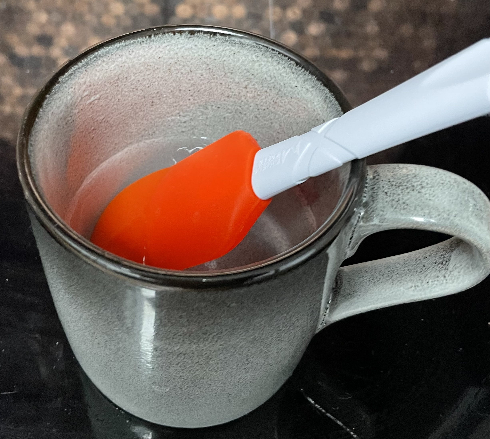

Caramel
Notes
- While warming do not stir or mix
- If need to mix use silicon spatula and gently move from outside in centre
- Add water first
- Lemon juice / honey supposed to reduce crystallisation
- Pile sugar in middle so don't get crystals up the side
- Sugar must be completely dissolved before turning up the hear
- Lid on for first stage so condensation from the water washes down the sides of the pan, preventing any
crystallization
- If required use silicon scraper in hot water if need to clean sides of pan to prevent sugar burning
- Warm ramekins / tray (~100°C) so caramel does not cool immediately and can be swirled to coat base
evenly
- Use white caster sugar so can see colour change
- 185-190C for caramel
Cooking
- Warm in pan on low heat mixing gently until sugar dissolved
- 1.00 white caster sugar
- 0.3 water warmed
- drops lemon juice
- Turn up heat for few mins
- Remove lid and continue to heat
- Cook until dark and just smelling smoky
- Quickly divide caramel into warm ramekins / tray while still bubbling
- Leave to cool and harden
Pics
Spatula in hot water
